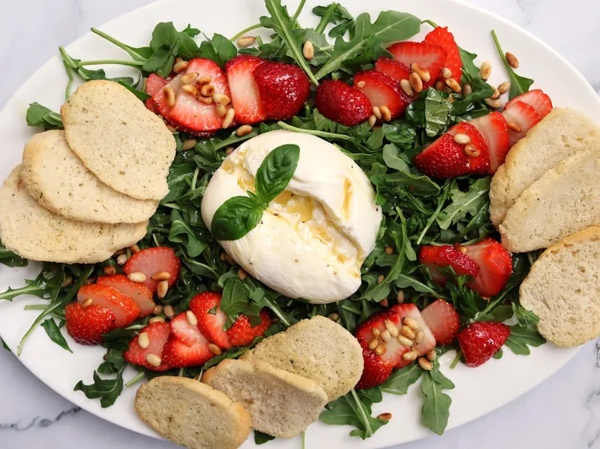

Strawberry Burrata Salad

Description
For this strawberry burrata salad, ripe strawberries, creamy burrata, and peppery arugula are drizzled with
a sweet hot honey vinaigrette and finished with toasted pine nuts and basil.
Serve with crostini for the ultimate summer appetizer or light meal.
Pistachios or crushed macadamia nuts
make delicious alternatives to the pine nuts, and regular honey can be used in place of hot honey for a sweeter, milder dressing.
For a fun twist, use the crostini to scoop up some of the creamy burrata and top with the salad.
Ingredients
Dressing
- 1/4 cup extra-virgin olive oil
- 2 tablespoons fresh lemon juice
- 2 tablespoons white balsamic vinegar
- 1 tablespoon hot honey
- salt and freshly ground black pepper to taste
Salad
- 2 tablespoons pine nuts
- 5 ounces baby arugula
- 12 strawberries, sliced
- 2 (4 ounce) balls burrata cheese
- 8 fresh basil leaves, torn into small pieces
- 12 pieces crostini
Steps
- For dressing, whisk olive oil, lemon juice, balsamic vinegar, and hot honey together
in a small bowl or jar. Season with salt and black pepper. Set aside.
- For salad, heat a dry skillet over medium. Add pine nuts and cook, stirring frequently,
until golden and fragrant, about 3 to 5 minutes. Transfer to a plate and let cool.
- Spread arugula onto a serving platter and scatter the strawberries, basil, and pine nuts over the top.
Nestle the burrata balls in the center and make a small slit in each to reveal the creamy interior.
Sprinkle burrata with salt and pepper.
- Drizzle the salad and cheese with dressing and arrange the crostini around the edges of the platter. Serve immediately.
Home